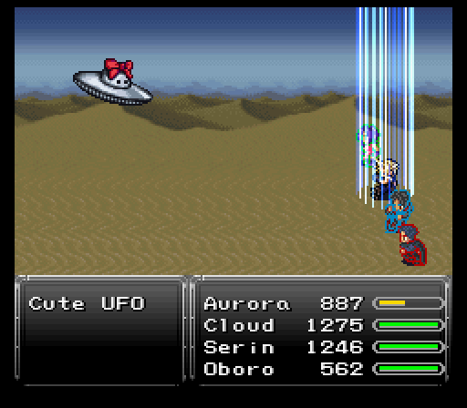
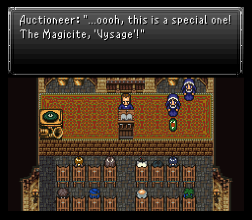
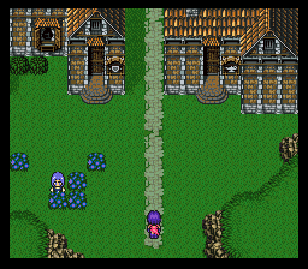
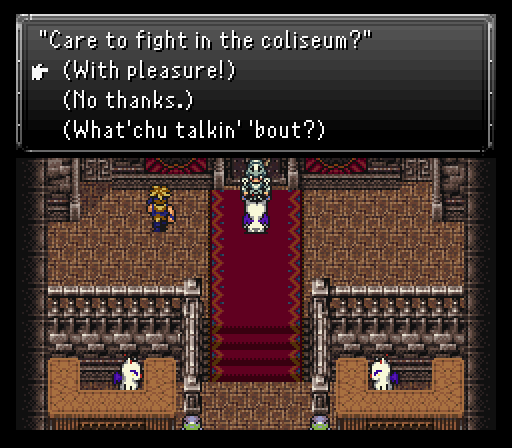
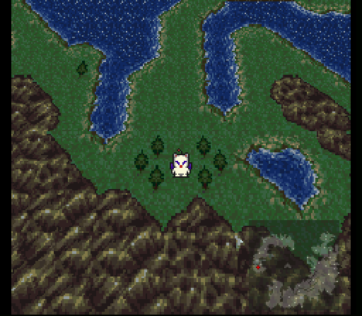
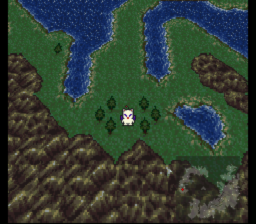
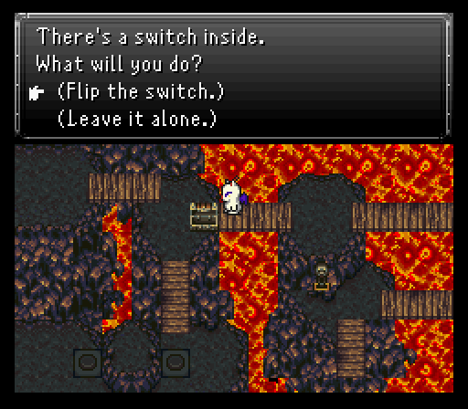
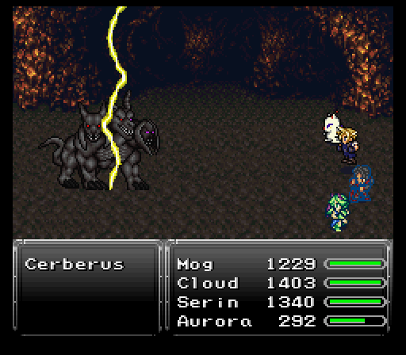

Part 12: Trials and Tribulations
Cleanup tour:
While we could go run straight to the next major dungeon, there's a bunch of little detours we can go check out now that the airship is in our hands.
Starting out, there's a peculiar triangle shaped island in the center of the world map. Playing around a bit in the desert and you may run into a Cute UFO. Seems innocent enough until it starts launching powerful AoE attacks like Atomic Ray & Aerods. It can also blast someone with Magitek Missile which can do 1500+ damage. My characters are JUST starting to climb over that threshold.
So, why fight them? 10 spell points a kill is always nice. So are the steals (Tincture in the common slot, Elixir in the rare slot) as well as the drops (Scrap Metal common, Atomic Ball as the rare drop).
Next up, back in Sunfall City. There's a very holy aligned auction house in the northeast part of town and there's plenty of goodies to buy. Two espers/magicite (Vysage for 20k gil, Yu Yevon for 10k gil) and two awesome relics. Angel Pendants are pretty nice, but I ended up getting those with some arena betting. The real reward are the Pod Bracelets at 10k each. They mix in the effects of the Mystic Ring & Mithril Glove, meaning you'll no longer need those two relics once you've picked up four of these, something I'll be doing before the next segment.
As for the espers, Vysage is the more notable of the two. It casts Flesh Protector to shield the party from physical attacks, but it will only be able to block a few blows before wearing off. And along with Protect and Cura it teaches Stop, which is very useful.
Yu Yevon is all about the magic based spells, it casts Magic Shield (Shell) on the party and teaches Expel, Osmose and Shell.
Next up, there's a town in the northeast part of the world that doesn't reveal its name when you enter. The townsfolk are not very friendly either. So much so that the merchants refuse service to you and the innkeeper charge 1.5k gil for a night's rest. Still, there's a few items scatted around, most notably a Stone Axe in the northern part of town. Earth elemental weapon that does double damage to humans & plants.

Also worth noting is a locked door to the southwest of the inn and a chain chomp from the mario series blocking passage to a door in the northwest. Both of these will have to wait a while before anything can be done about them.
Finally, back in Fraust, the shops have updated wares. The relic shop has nothing new of value, but the weapon shop has buyable Stone Axes and Cryogen. The latter is an interesting weapon with water & ice elements, making it a bit less of a hassle to switch weapons around if an enemy nullifies or absorbs one of the elements. It'll also come in handy later on inside a certain burning house.
As for the item shop...Fire/Water/Bolt Scrolls, but at cheaper prices than what you're used to (500 here vs 750 everywhere else thus far). You're going to want to pick up a bunch of Water Scrolls before the next dungeon if you don't want to pay the higher price for them later though.
Finally, there's the treasure house in the southeast part of town. Inside there now is a rogue werewolf thief that somehow manages to open the locked chest. When he makes his escape and you check the chest to find it's indeed looted, head outside to find he's making a grand escape....into the mines. Sir, if you were smart, you would have gone SOUTH and booked it out of town.


As such, you'll be following him north into the mines and heading towards the esper on the snowy cliffs. When you get there, you'll find the thief pulling an even dumber move...trying to take a moogle captive. This moogle does not take kindly to the advance and frees himself, forcing you to make a choice. Both are in danger of falling off the cliff, but you can only save one. Make it the moogle. Why? The relic the thief claims to have can be found in the next dungeon.

As for the moogle? It's our favorite prinny hater Mog and he finally joins the crew permanently. You can now get all his remaining dances by fighting in different areas/types of terrain:
- Air Guitar (grassland, already learned) - Air Blast, Sonic Boom, Wind Slash, Cockatrice
- Disco Inferno (desert) - Sand Storm, Antlion, Wildfire, Tapir
- Geo Bounce (mountain) - Rock Slide, Earth Surge, Sun Bath, Boar Brigade
- Cavern Strut (cave, already learned) - Cave In, Pitfall Trap, Shock Wave, Poison Frog
- Jungle Boogie (forest) - Razor Leaf, Will-o'-the-Wisp, Tranquility, Wombat
- Cupid Shuffle (city) - Swine Song, Apparition, Flash Rain, Mongoose
- Liquid Trance (water) - El Nino, Twin Plasma, Tsunami, Racoon
- Arctic Slide (snow, learned at Fraust battle) - Snowball, Absolute Zero, Avalanch, Snow Rabbit
To get Liquid Trance, you'll need to take the raft from the Crimson Blades' hideout. Once you win a battle on the raft you'll recieve the dance. Once we're off the raft and back on the overworld, head north to Kaldor Trade City and take the ship back to Seascape Town, then climb back over Mt. Zephyr and head to where we parked our airship outside the hideout.
The Coliseum:
The bridge to the Coliseum south of Sunfall City has been repaired. Normally only seen in the late game, you can bet items for prizes, but not worthless ones. Otherwise, Majin Buu shows up to take the item and kick your ass. Another nice change with this mod is the window now displays the bet items and their correspondents rewards.
Neko's also here and has a shop loadout similar to what he had at the start of Ronan's scenario. That includes the interesting First Strike relic and it does what you expect a relic with the name First Strike does which is to instantly fill the wearer's ATB gauge at the start of battle.
The Underworld:
Now then, let's dive into a mysteriously empty Imperial base. Clearly a sign something's up. Exit on the eastern side of the base, then head across the bridge and go straight south to enter the Underworld.
 

Enemy wise, the worst ones are the Meats & Fiends. The former was fought at Rogue City and is no less dangerous here while the latter has a penchant for using Lifeshaver and chaining that right into Acid Rain. Considering Lifeshaver can do over 1000 damage if the Fiend is heavily damaged, that can leave a full health character very near death if Acid Rain is used right after.
Other new enemies include:
- Ara Mitama - Uses fire spells, including Inferno, the strongest of the three normal magic fire spells, either on its third turn or if last alive.
- Facehugger - Uses 1000 Needles, which will always do exactly 1000 damage. Chance of Magnitude Eight upon death.
- Skelesnake - Its special attack throws a bone that causes zombie. Can use Charm on its second turn, and has a chance to counter magic or Havoc with Black Shock.
- SweetTooth - Uses Frost Bite & Dancing Flame and 1000 Needles if last alive. Its special attack inflicts Stop.
The dungeon itself is pretty linear overall with some detours here & there. The treasure's really good though like the first two chests containing an Eviscerator (knife that randomly kills its target) and a Justifier (gun with high attack power and nice boosts to speed & stamina).
Once you enter the fourth room of the dungeon, you'll want to keep an eye out for a switch over a wooden bridge. Hitting it makes the bridge break, but you should be able to grab a chest in the northwest holding a valuable Void Stone relic. With this equipped, the wearer consumes 50% less mp.
Shortly after the bridge switch are two more switches before a second switch over a bridge. The switch on the right makes a solo Ninja drop down to challenge the team. Can toss the elemental scrolls for a fair chunk of damage, but it'll likely die before it can register any kills on the party. The other switch opposite to the Ninja trap one opens up a save point.
Past the second bridge switch, there's a bunch of hidden treasure you can find by examining four hidden squares. Exact same locations as they were from vanilla too. You'll get a Golden Apple, Might Tab, Soma Drop, and Atomic Ball in total. The following picture shows where to search.

After that, the rest of the loot is easily grabbed and not hidden. Make damn sure to open the cave by all the bridges though because four chests are inside. A Speed Tab, Magic Tab, and 10k gil are nice, but the real treat is Serin's seventh Aether, Psionic Wave. With this, if he successfully connects with it, he forces a random elemental weakness onto the enemy. It's been changed in this mod though so that if it is used multiple times, the previous weakness is reverted, so it will only impose one weakness at a time.
Speaking of changes in this mod, the switch section here has been reworked a bit so that you'll need to press the switch inside the chest that normally didn't seem to do anything in the original game, in order to proceed.
Once you've made it past, take the Slayer Glove from the chest and go south. Upon entering the next room, make sure to grab a well-hidden Master Star by going straight down and searching to the right, before finally exiting this dungeon...in essence. In reality, a Cerebus decides to be a jerk and attack your party mere steps before you can reach the save point. It has strong physical attacks and can use Inferno, but overall it isn't much of a threat. It's weak to lightning, so a morphed Aurora will make short work of it with Storm.
After saving, the gate to the esper world is in the next room. Too bad also coming in is Kefka and a pair of Vanguards. Aurora will have to open the gate while the rest of the team deals with Kefka.
Kefka hasn't really changed much since the last time at Fraust. He's more of a supporter here though via throwing out ailments. His two Vanguard buddies can be annoying if they focus fire their Giga Volts on the same target, but otherwise they're not much to write home about. Cast either the Death or Break spell if you have it to make short work of them.

While this is more or less a "survival battle", where the party needs only to survive for a certain amount of time, it is possible to win. Serin's Catastrophe is good for consistent damage against Kefka, and of course Avalon's Havoc, though it may miss more than not due to Kefka's high magic evade. Besides those you can easily exploit this battle by using Stop on Kefka, which will render him useless for three turns.
What is to write home about though is the other enemy Kefka swaps in, an Evil Weapon. It can hit hard on frontliners (600-700 damage), but the real danger is the fact it can chain cast Scorch, Freeze, and Storm back to back. Will probably kill a target unless they've been buffed with Shell. This monster is susceptible to Imp, but once so it will dish out critical attacks which can be just as lethal. Thankfully for me Aurora got that gate opened soon after that triad of pain.

Once the ensuing horde of espers pours out of the gate and Kefka's nowhere to be seen, you can head out of the gate area and save up. Time to get out of the Underworld, but as you probably can see, the usual shortcut exit isn't there. Luckily, Teleport works so cast that to get out and make your way back to the airship.